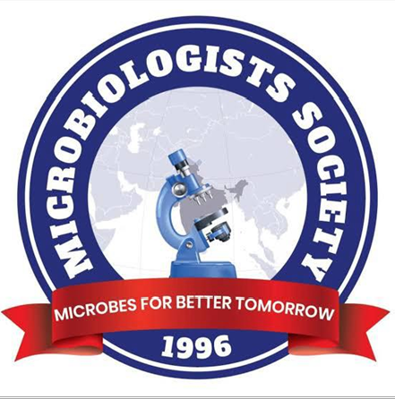
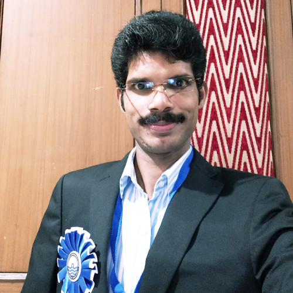
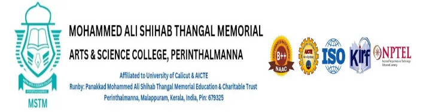
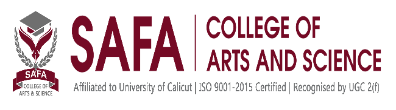
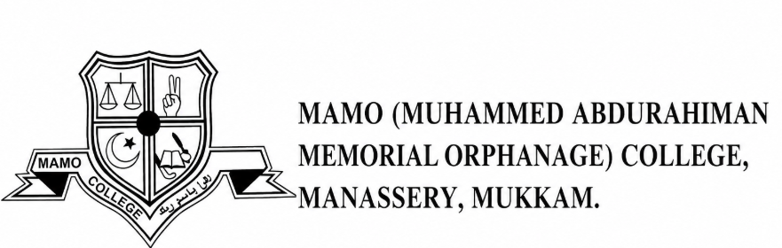

Prof. Dr. Arvind M. Deshmukh
National President
Microbiologists Society, India (MBSI)

Microbiologists Society, India
MBSI Student Chapter
A Special Interaction with MBSI Leadership and Students from the
Malabar Region of Kerala
MBSI Student Chapter – Get Together is an academic and interactive programme bringing together MBSI leaders, faculty members, and microbiology students from colleges across the Malabar region. A major highlight is the inauguration of MBSI Student Chapters of six colleges, including Majlis Arts & Science College, strengthening student participation in academic, research, professional, and collaborative activities. The programme features interaction with Prof. Dr. Arvind M. Deshmukh, National President, MBSI, and Dr. Sinosh Skariyachan, State President, Kerala, MBSI, providing valuable insights into microbiology, research, careers, and professional development. Other highlights include the poster presentations “Bacillus subtillis: The Microbial pride of Our State” and “Buttermilk: From Traditional Drink to National Pride,” along with a Buttermilk Recipe Contest and Biocolour Special Tribute. Overall, the programme aims to inspire scientific excellence, leadership, creativity, collaboration, and active participation in the microbiology community.
National President
Microbiologists Society, India (MBSI)

State President, Kerala
Microbiologists Society, India (MBSI)
The Microbiologists Society India (MBSI) was established in March 1996 and officially registered in November 1996 at Satara, Maharashtra (Reg. No. MAH/4814/SAT). Under the leadership of Dr. Arvind Madhavrao Deshmukh, MBSI is committed to advancing microbiology through education, research, and professional collaboration. Dr. Sinosh Skariyachan serves as State President, Kerala.
MBSI promotes microbiology education at every level, strengthens collaboration between institutions, supports conferences and research activities, and maintains open membership for students, faculty, and anyone with an interest in the life sciences.
Majlis Arts & Science College (Autonomous), Puramannur, Malappuram, Kerala — affiliated with the University of Calicut and accredited with an 'A' Grade by NAAC — was established in 1995 and offers Kerala's first Integrated B.Ed. programme (ITEP) under NEP 2020.
Its Postgraduate Department of Microbiology, established in 2003, maintains modern laboratories and strong academic and industry collaborations. The department's MBSI Student Chapter, launched in 2024, drives student engagement through seminars, workshops, conferences, and outreach programmes.
Expanding the MBSI Student Chapter family to:

Mohammed Ali Shihab Thangal Memorial Arts & Science College, Perinthalmanna
Al Jamia Arts & Science College
GEMS Arts and Science College (Autonomous)

SAFA College of Arts and Science
Fathima Arts & Science College

MAMO College, Manassery
An exclusive opportunity for students and faculty to interact with the National President and gain valuable insights.
An enriching interaction that fosters stronger connections and collaboration among MBSI Student Chapters across Kerala.
Inauguration of MBSI Student Chapters at participating colleges across the Malabar region.
Distribution of MBSI Membership Certificates 2026 to students of participating colleges.
Promoting the nutritional, health, and cultural significance of traditional buttermilk.
A special expression of creativity, appreciation, and the spirit of microbiology.
Explores the significance, applications, beneficial roles, and unique features of Bacillus subtilis.
Explores its nutritional value, microbial diversity, health benefits, and cultural importance.
A creative recipe contest celebrating buttermilk, with prizes, recognition, and certificates.
Registration is open to both students and faculty. Choose the form that applies to you:
Dr. Vipina R.
Coordinator, Malabar Region of Kerala
HOD, PG Department of Microbiology
Majlis Arts and Science College